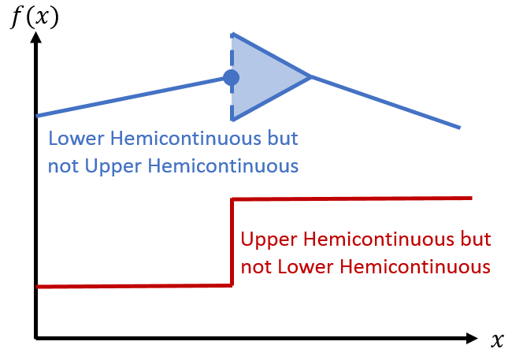

Teaching Materials
University of Essex
2017-2018

- Intro to Economics (Macro portion)
- Intermediate Macroeconomics
- Mathematical Methods in Economics
- Career Skills in Economics
- Dissertation advising for undergraduate and graduate students
Georgetown University
2010-2015
As lecturer:
- Math Camp (for PhD program)
- Macro Principles
- Intermediate Micro

As TA:
- Micro Principles
- Intermediate Macro
- Intermediate Micro
- Econometrics (Masters in Applied Economics)
- International Trade
Tinbergen Institute
2008-2009
- Math II (optimization)
- Macro I (Intro to DSGE models)
- General Equilibrium